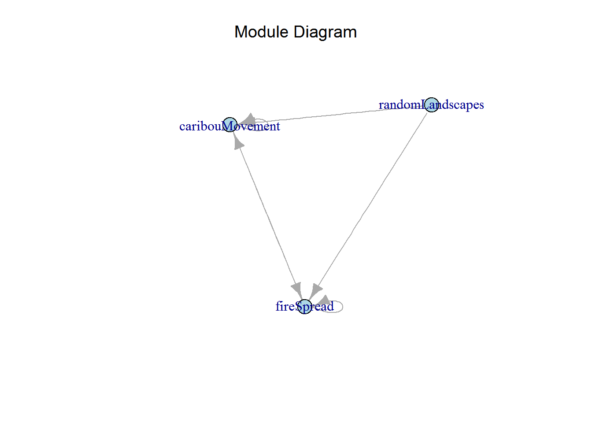
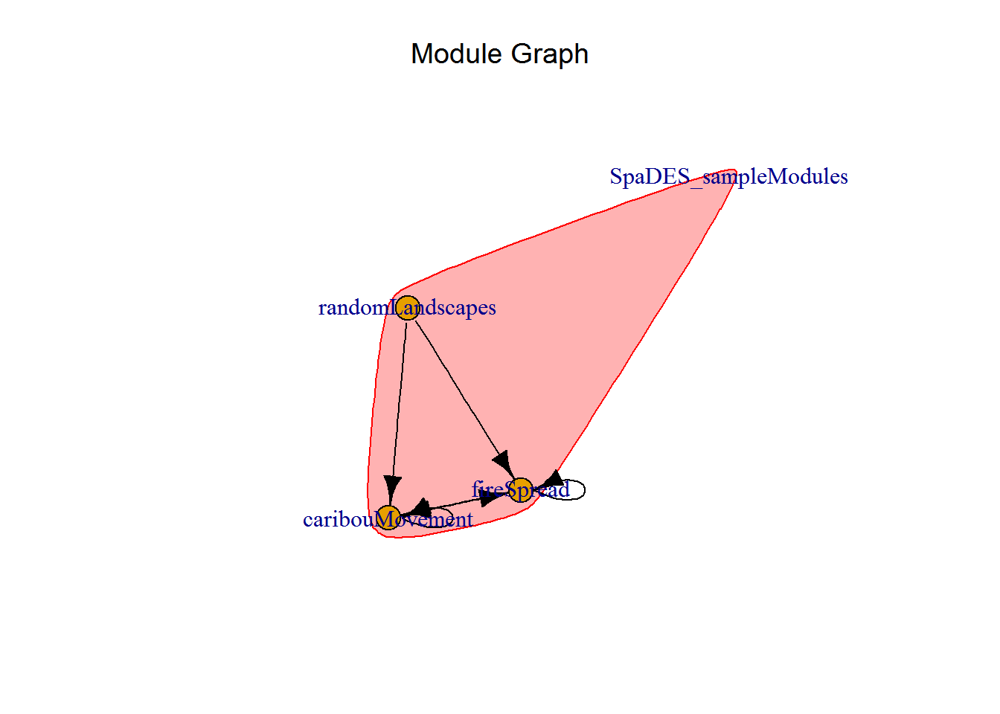

SpaDES
Recall that SpaDES simulations are event-driven, meaning that different actions are performed on data objects based on the order of scheduled events. The central design of SpaDES promotes modularity, such that collections of related simulation actions can be grouped together as ‘modules’ and easily reused among multiple simulations. Strict modularity requires that modules can act independently, without needing to know about other modules. Thus each SpaDES module must explicitly state its input dependencies (data, package, and parameterization requirements), data outputs, as well as provide other useful metadata and documentation for the user. Upon initialization of a simulation via simInit, the dependencies of every module used are examined and evaluated. If dependency incompatibilities exists, the initialization fails and the user is notified. Also during this initialization, module code is source-ed into the simulation environment, making all module objects and functions available during the simulation.
Each SpaDES module describes the processes or activities that drive simulation state changes via changes to objects stored in the simulation environment. Each activity consists of a collection of events which are scheduled depending on the rules of the simulation. Each event may evaluate or modify a simulation data object (e.g., update the values on a raster map), or perform other operations such as saving and loading data objects, plotting, or scheduling other events.
The event queue is stored in a slot in a simList simulation object. Each event is represented by a data.table row consisting of the time the event is to occur (eventTime), the name of the module from which the event is taken (moduleName), and a character string for the programmer-defined event type (eventType). This list is kept sorted by eventTime, and events are processed in sequence beginning at the top of the list. Completed events are removed from the queue.
When a call to the event list is made, the event is processed by the module specified by moduleName. The module code then determines the event type and executes the code for that event. For each event type within a module: 1) the instructions for what happens for this event get executed; and 2) there is an optional call to scheduleEvent, which schedules a future event. A module can schedule other event types from within the same module, and should not call other modules because this introduces module dependencies, which breaks the drop-in/replace modularity of your simulation model.
Each module schedules its own events (e.g., a ‘fire’ module may schedule ‘burn’ events) and only uses its own data objects (or shared simulation objects). Modules that behave in this way are independent of one another, which is the preferred way to design and implement modules. Maintaining strict modularity allows the removal, addition, and replacement of modules without having to rewrite your code.
Module event dependencies complicate the construction of simulation models, and hinder the ability to develop and deploy models with modularity. If two modules are actually dependent on each others’ events, then you should consider whether they really are separate modules or should be merged into a single module.
moduleName/)A module consists of a collection of files and folders that …
/moduleRepository
|_ moduleName/
|_ R/ # contains additional module R scripts
|_ data/ # directory for all included data
|_ CHECKSUMS.txt # contains checksums for data files
|_ tests/ # contains unit tests for module code
|_ citation.bib # bibtex citation for the module
|_ LICENSE.txt # describes module's legal usage
|_ README.txt # provide overview of key aspects
|_ moduleName.R # module code file (incl. metadata)
|_ moduleName.Rmd # documentation, usage info, etc.
|_ moduleName_x.y.z.zip # zip archive of previous versionsmoduleName.R)A SpaDES module consists of a single .R source file, whose name matches the name of the module. This file consists of three parts containing the code for:
In order to interact correctly with one another in a simulation, SpaDES modules are designed to be aware of their own dependencies and to share this information with the simulation (and to the user). During simulation initialization, the .R file corresponding to each module used is parsed and the modules’ metadata stored in the simList object inside the envir. As part of this initialization step, the dependencies of each module are extracted from the metadata and are checked against the other modules used in the simulation to ensure that all dependencies can be resolved.
defineModule()
Every module requires complete metadata, structured as a named list, and passed as an argument to the defineModule function.
| Element name | Description |
|---|---|
name |
Name of the module as a character string. |
description |
Description of the module as a character string. |
keywords |
Character vector containing a module’s keywords. |
childModules |
Character vector containing the names of the child modules that are part of this module. |
authors |
The author(s) of the module as a person object. |
version |
The module version as a character, numeric, or numeric_version. Semantic versioning is assumed. |
spatialExtent |
Specifies the module’s spatial extent as an Extent object. |
timeframe |
Specifies the valid timeframe for which the module was designed to simulate. |
Must be a POSIXt object of length 2, specifying the start and end times. |
|
| (NOT YET FULLY IMPLEMENTED.) | |
timeunit |
Describes the unit of time corresponding to 1.0 simulation time units. |
citation |
A list of citations for the module, as a character strings. |
| Alternatively, the name of a or similar file. | |
documentation |
List of filenames referring to module documentation sources. |
reqdPkgs |
Character vector of R package names to be loaded. |
parameters |
A data.frame constructed using rbind with defineParameter, specifying module |
parameters, with columns paramName, paramClass, default, min, max, and paramDesc. |
|
Default values may be overridden by the user by passing a list of parameters to simInit. |
|
inputObjects |
A data.frame constructed using bind_rows with expectsInput, specifying |
the object dependencies of the module, with columns objectName, objectClass, desc, sourceURL and other specifications. |
|
| For objects that are used within the module as both an input and an output, | |
add an input object by using expectsInput. |
|
outputObjects |
A data.frame constructed using bind_rows with createsOutput, specifying |
the objects output by the module, with columns objectName, objectClass, desc and other specifications. |
|
Add an output object by using createsOutput. |
## sample module metadata for the default `randomLandscapes` module
## NOTE: long lines have been truncated
defineModule(sim, list(
name = "randomLandscapes",
description = "Generate RasterStack of random maps representative of a forest landsc...",
keywords = c("random map", "random landscape"),
authors = c(person(c("Alex", "M"), "Chubaty",
email = "alexander.chubaty@canada.ca",
role = c("aut", "cre")),
person(c("Eliot", "J", "B"), "McIntire",
email = "eliot.mcintire@canada.ca",
role = c("aut", "cre"))),
version = numeric_version("0.2.0"),
spatialExtent = raster::extent(rep(NA_real_, 4)),
timeframe = as.POSIXlt(c(NA, NA)),
timeunit = NA_real_,
citation = list(),
reqdPkgs = list("raster", "RColorBrewer", "tkrplot", "RandomFields"),
parameters = rbind(
defineParameter("stackName", "character", "randomLandscape", NA, NA, "..."),
defineParameter("nx", "numeric", 100L, NA, NA, "size of map (number ..."),
defineParameter("ny", "numeric", 100L, NA, NA, "size of map (number ..."),
defineParameter("inRAM", "logical", FALSE, NA, NA, "should the raster ..."),
defineParameter(".plotInitialTime", "numeric", 0, NA, NA, "time to ..."),
defineParameter(".plotInterval", "numeric", 1, NA, NA, "time interval ..."),
defineParameter(".saveInitialTime", "numeric", NA_real_, NA, NA, "time ..."),
defineParameter(".saveInterval", "numeric", NA_real_, NA, NA, "time ...")
),
inputObjects = bind_rows(
expectsInput(objectName = NA_character_, objectClass = NA_character_,
desc = NA_character_, sourceURL = NA_character_, other = NA_character_)
),
outputObjects = bind_rows(
createsOutput(objectName = globals(sim)$stackName, objectClass = "RasterStack",
desc = NA_character_, other = NA_character_)
)
))defineParameter()
Parameters here differ from input data objects in that the former are intended to be variable across simulation runs, whereas the latter remain constant. Parameters are often module-specific, where they are only used within the module they are defined, although it may be useful to globally define some parameters that are intended to be used by multiple modules. Module-specific parameters are specified using defineParameter (with rbind) within defineModule to build a data.frame of input parameters. Global parameters are defined at the simulation level as part of the simInit call.
The parameter list in the simList object (accessed via params) may be used to pass named parameter values to modules. The general structure of this parameter list is parameters$moduleName$moduleParameter. This nested list structure allows passing as many parameters as needed for your simulation. We suggest passing a list of all the parameters needed for a single module together.
A module’s metadata defines default values for module-specific parameters, and these defaults will be used unless overridden by the user. Default parameter values can overridden by passing values in the parameter list to simInit.
library(SpaDES)
outputDir <- file.path(tempdir(), "simOutputs")
times <- list(start = 0.0, end = 20.0)
parameters <- list(
.globals = list(stackName = "landscape", burnStats = "nPixelsBurned"),
.progress = list(NA),
randomLandscapes = list(nx = 100L, ny = 100L, inRAM = TRUE),
fireSpread = list(
nFires = 10L, spreadprob = 0.225, its = 1e6, persistprob = 0,
returnInterval = 10, startTime = 0,
.plotInitialTime = 0, .plotInterval = 10
),
caribouMovement = list(
N = 100L, moveInterval = 1, torus = TRUE,
.plotInitialTime = 1, .plotInterval = 1
)
)
modules <- list("randomLandscapes", "fireSpread", "caribouMovement")
objects <- list()
paths <- list(modulePath = system.file("sampleModules", package = "SpaDES"),
outputPath = outputDir)
mySim <- simInit(times = times, params = parameters, modules = modules,
objects = objects, paths = paths)Each module may contain an arbitrary number of event types. Each of these event types are defined within the doEvent.moduleName call, and are wrapped in a simple if/else stanza that matches the called event type (NOTE: when several event types are defined, switch/case can faster than if/else). To keep the doEvent.moduleName code block as clear and readable as possible, keep the definitions of each event type minimal, using functions (defined outside of the block) for the details of what is happening for each event.
## sample event type definitions from the default `randomLandscapes` module
doEvent.randomLandscapes <- function(sim, eventTime, eventType, debug = FALSE) {
if (eventType == "init") {
# do stuff for this event
sim <- randomLandscapesInit(sim)
# schedule the next events
sim <- scheduleEvent(sim, params(sim)$randomLandscapes$.plotInitialTime,
"randomLandscapes", "plot")
sim <- scheduleEvent(sim, params(sim)$randomLandscapes$.saveInitialTime,
"randomLandscapes", "save")
} else if (eventType=="plot") {
# do stuff for this event
Plot(sim[[globals(sim)$stackName]])
# schedule the next event
sim <- scheduleEvent(sim, time(sim) +
params(sim)$randomLandscapes$.plotInterval,
"randomLandscapes", "plot")
} else if (eventType == "save") {
# do stuff for this event
saveFiles(sim)
# schedule the next event
sim <- scheduleEvent(sim, time(sim) +
params(sim)$randomLandscapes$.saveInterval,
"randomLandscapes", "save")
} else {
warning(paste("Undefined event type: \'",
events(sim)[1, "eventType", with = FALSE],
"\' in module \'",
events(sim)[1, "moduleName", with = FALSE],
"\'", sep = ""))
}
return(invisible(sim))
}Event functions should be defined below the doEvent.moduleName code block and follow the naming convention modulenameEventtype(). Keep these function definitions as short and clean as possible (you can further modularize your functions by calling additional subroutines).
Functions should get and return objects in the simulation environment (envir), rather than pass them as function arguments. This mostly allows for function definitions to be simpler, i.e., they just take the one sim argument if parameters are passed within the simInit call. Accessing objects in the envir is similar to accessing items in a list, i.e., sim[["object"]] or sim$object can be used, in addition to get("object", envir=envir(sim)). Likewise, simulation functions (i.e., those defined in modules) are also accessed using the $ accessor (e.g., sim$myFunction()).
Note that every module requires an "init" event type, which defines the initialization of the module; however, this init event need not do a whole lot (i.e., it can be a stub). As such, the modulenameInit() function is required for initialization. Modules may also include "save" and "plot" events, though these are optional.
## sample event functions from the default `randomLandscapes` module
library(raster)
randomLandscapesInit <- function(sim) {
if (is.null(params(sim)$randomLandscapes$inRAM)) {
inMemory <- FALSE
} else {
inMemory <- params(sim)$randomLandscapes$inRAM
}
# Give dimensions of dummy raster
nx <- params(sim)$randomLandscapes$nx
ny <- params(sim)$randomLandscapes$ny
r <- raster(nrows = ny, ncols = nx, xmn = -nx/2, xmx = nx/2,
ymn = -ny/2, ymx = ny/2)
speedup <- max(1, nx/5e2)
# Make dummy maps for testing of models
DEM <- gaussMap(template, scale = 300, var = 0.03,
speedup = speedup, inMemory = inMemory)
DEM[] <- round(getValues(DEM), 1) * 1000
forestAge <- gaussMap(template, scale = 10, var = 0.1,
speedup = speedup, inMemory = inMemory)
forestAge[] <- round(getValues(forestAge), 1) * 20
percentPine <- gaussMap(template, scale = 50, var = 1,
speedup = speedup, inMemory = inMemory)
percentPine[] <- round(getValues(percentPine), 1)
# Scale them as needed
forestAge <- forestAge / maxValue(forestAge) * 100
percentPine <- percentPine / maxValue(percentPine) * 100
# Make layers that are derived from other layers
habitatQuality <- (DEM + 10 + (forestAge + 2.5) * 10) / 100
habitatQuality <- habitatQuality / maxValue(habitatQuality)
# Stack them into a single stack and assign to sim envir
mapStack <- stack(DEM, forestAge, habitatQuality, percentPine)
names(mapStack) <- c("DEM", "forestAge", "habitatQuality", "percentPine")
setColors(mapStack) <- list(DEM = grDevices::terrain.colors(100),
forestAge = brewer.pal(9, "BuGn"),
habitatQuality = brewer.pal(8, "Spectral"),
percentPine = brewer.pal(9, "Greens"))
sim[[globals(sim)$stackName]] <- mapStack
return(invisible(sim))
}To better understand how events are scheduled within a simulation, a visual representation called an eventDiagram illustrates the sequences of events within a simulation.
Simulation time is presented on the x-axis, starting at date startDate. Each module appears in a color-coded row, within which each event for that module is displayed corresponding to the sequence of events for that module. Note that only the start time of the event is meaningful is these figures: the width of the bar associated with a particular module’s event corresponds to the module’s timestep unit, not the event’s “duration”.
## png
## 2mySim <- spades(mySim) # runs the simulation
# overview of the events in the simulation
eventDiagram(mySim, "0000-06-01", n = 200, width = 720)moduleName.Rmd)Module documentation should be written so that others can use your module. As such, this documentation should include a high-level overview of the module as well as low-level, detailed descriptions of its usage.
We strongly recommend using R Markdown (.Rmd) for this documentation, as it is easily human-readable while also being machine-readable and easily converted to a wide variety of file formats including PDF, HTML, and DOCX. Another benefit of using a text-based file format is to facilitate transparent document versioning and history using version control systems like git. For help writing in R Markdown, see http://rmarkdown.rstudio.com/.
citation.bib provides a BibTeX formatted citation with which the module can be referenced. Most citation management software can read and output .bib format.
LICENSE.txt describes how your module can be redistributed and used by others. For help selecting a license, see choosealicense.com.
README.txt is used to briefly document module metadata and version change information.
All module data are located in the module’s data/ subdirectory. Also included in this folder is a CHECKSUMS.txt file that contains the expected checksums for each data file. Checksums can be verified (and optionally written) using checksums().
Modules may require data that for various reasons cannot be distributed with the module source code. In these cases, the module developer should ensure that the module downloads and extracts the data required. It is useful to not only check that the data files exist locally but that their checksums match those expected (see checksums()).
moduleName_x.y.z.zip)Use semantic versioning, such that a version number x.y.z corresponds to:
x is the major version (incremented when you make incompatible API changes)y is the minor version (incremented when you add functionality in a backwards-compatible manner)z is the patch version (incremented when you make backwards-compatible bug fixes)Modularity in SpaDES simulations is maintained by ensuring modules interact indirectly with one another by reading in and modifying objects in the simulation environment.
As you build your modules for your simulation, you can use any of R’s data types to store your objects and data. In particular, matrices (including vectors) and lists work well for this purpose because, as of R version 3.1.0, they are more efficient, reducing your model’s memory footprint and speeding up your code’s execution. Other useful data types include Raster* and SpatialPoints* objects (see examples below).
R passes copies of objects to functions (instead of using pass-by-reference), so the typical R function never acts directly on the global copy of the variable. Within a function, all operations are generally performed on a local copy of the object, which is then either discarded or returned back to the parent environment upon when the function completes. This object-copying behaviour has given R a reputation of being slow in comparison to languages like C and FORTRAN. However, recent improvements to R have made it more memory efficient and faster to execute, in part by minimizing the number of object copies made and lazy loading.
One way SpaDES reduces object copying is by storing and modifying objects in a simulation environment, because environments in R have reference semantics. Instead of storing simulation data in the global environment, each SpaDES simulation uses a unique environment wherein simulation data are referenced.
As noted above, modules should not depend on one another for event scheduling. However, it is often useful to develop collections of modules that interact indirectly and are dependent on shared data objects. Modules can be designed to rely on outputs (data objects) from other modules. When objects are shared between modules, it is important to state these dependencies explicitly. To check whether objects upon which a model depends exist, a call to checkObject is made during module initialization.
Note that modules need not be inter-dependent on one another: module B may depend on module A (for example to initialize a data object), without module A depending on module B.
To view the dependencies for a simulation:
library(SpaDES)
times <- list(start = 0.0, end = 20)
parameters <- list(
.globals = list(stackName = "landscape", burnStats = "nPixelsBurned")
)
modules <- list("SpaDES_sampleModules")
paths <- list(modulePath = system.file("sampleModules", package = "SpaDES"))
mySim <- simInit(times = times, params = parameters, modules = modules, paths = paths)
## examine simulation module (object) dependencies
depsEdgeList(mySim, FALSE) # all object dependency relationships## from to objName objClass
## 1: caribouMovement caribouMovement landscape RasterStack
## 2: caribouMovement fireSpread landscape RasterStack
## 3: fireSpread caribouMovement landscape RasterStack
## 4: fireSpread fireSpread landscape RasterStack
## 5: fireSpread fireSpread nPixelsBurned numeric
## 6: randomLandscapes caribouMovement landscape RasterStack
## 7: randomLandscapes fireSpread landscape RasterStackclearPlot()
moduleDiagram(mySim) # simplified visual representation of modules
clearPlot()
moduleDiagram(mySim, showParents = TRUE) # similar, but showing parent module grouping
# detailed visual representation of objects
objectDiagram(mySim, width = 720)The output of the depsEdgeList is an edgelist describing the relationships between each module. In the example above, line 2 of the output indicates that the fireSpread module relies on an object landscape provided by the caribouMovement module. This edgelist is used inside the depsGraph function to produce a dependency graph (network), where each module corresponds to a vertex (node), and object dependencies are denoted by the arrows. When plotting the dependency graph, it’s often useful to use the plot=TRUE argument to simplify the network by showing no more than one object dependency between modules.
There are a number of built-in modules that provide useful functionality such as plotting and saving. These modules have their names prefaced with a dot (.). Parameter values for core modules can be accessed by using their accessor methods; however, these are simply entries in a nested list exactly like the parameters passed to user modules, and can be accessed directly as such.
These core modules are summarized in the following table and described further below.
| Module Name | Parameterization | Accessor Methods |
|---|---|---|
.checkpoint |
file: character. |
checkpointFile() |
interval: numeric (or NA). |
checkpointInterval() |
|
.plot |
.plotInitialTime: numeric (or NA) |
as list item in your module parameters. |
.plotInterval: numeric (or NA) |
as list item in your module parameters. | |
.progress |
type: one of "text", "graphical", |
progressType() |
"shiny", or NA. |
||
interval: numeric (or NA). |
progressInterval() |
|
.load |
inputs: data.frame |
inputs() or passed as inputs argument to simList
|
.save |
outputs: data.frame |
outputs() or passed as outputs argument to simList
|
.saveInitialTime: numeric (or NA) |
as list item in your module parameters. | |
.saveInterval: numeric (or NA) |
as list item in your module parameters. | |
.saveObjects: character. |
as list item in your module parameters. | |
.savePath: character. |
as list item in your module parameters. |
.checkpoint moduleSchedule automatic simulation checkpointing to allow you to resume a previously saved simulation. All objects in the global environment including the state of the random number generator are saved and can be reloaded. Checkpoint frequency and filename can be passed as parameters to the simulation object as illustrated below. By default, checkpointing is not used unless the interval parameter is provided; the simulation checkpoint file (if one exists) is loaded if the file parameter is specified.
# initialize a new simulation, setting the checkpoint interval and filename.
times <- list(start = 0, end = 30)
parameters <- list(
.globals = list(stackName = "landscape"),
.checkpoint = list(interval = 10, file = "chkpnt.RData")
)
modules <- list("randomLandscapes", "caribouMovement")
paths <- list(
modulePath = system.file("sampleModules", package = "SpaDES")
)
mySim <- simInit(times = times, params = parameters, modules = modules, paths = paths)
# retrieve the checkpoint params from the simulation object
checkpointFile(mySim)## [1] "chkpnt.RData"checkpointInterval(mySim)## [1] 10.progress moduleSchedule updates to the simulation progress bar.
# initialize a new simulation, setting the progress parameters
mySim <- simInit(times = list(start = 0.0, end = 100.0),
params = list(.globals = list(stackName = "landscape"),
.progress = list(type = "text", interval = 10)),
modules = list("randomLandscapes"),
paths = list(modulePath = system.file("sampleModules", package = "SpaDES")))
# retrieve the checkpoint params from the simulation object
progressType(mySim)## [1] "text"progressInterval(mySim)## [1] 10.load and .save modulesSchedule object save and file load events by passing parameters to the save and load parameters for each module. Saving objects to file can be done at the module level or at the model level. At the module level, each module can be provided with appropriate arguments as parameters. In all cases, these must be events that are scheduled in the modules that do the saving or loading, and then the parameters necessary to make those events happen must be specified. Modules are not required to have the following parameters set, but when using newModule() to create the module, these will be events that are made, but not scheduled:
| Argument | Description |
|---|---|
.saveInitialTime |
Numeric specifying the time at which the first save is scheduled (between start(sim) and end(sim)). |
.saveInterval |
Numeric specifying the interval at which objects will be saved. |
| Used to schedule save events. | |
.saveObjects |
Character vector naming the objects to be saved. |
inputs argument to simInitAlternatively, objects can be read in during the simInit function call by passing a data.frame to the input argument. For inputs(), the data.frame must consist of, minimally, a column named file listing the absolute or relative filepaths of the files to be loaded. Additional columns can also be provided:
| Column Name | Description |
|---|---|
file |
Character string indicating the absolute or relative file path to individual file to load. |
objectName |
Character string indicating the name of the object once the file is loaded. |
fun |
Character string indicating the function to be used to load the file. Can use package::fun notation. |
package |
Character string indicating the package to load the fun from. Not required if fun uses package::fun notation |
intervals |
Numeric indicating the interval between repeated loading of the same file. |
This should be NA or the column absent if the file is only loaded once. |
|
loadTime |
Numeric indicating when the file should be loaded. Defaults to simTime = 0, but this |
can be any time. The loading will be scheduled to occur at the loadTime. |
|
| If the same file is to be loaded many times, but not at a regular interval, then there | |
should be separate line, with a unique loadTime for each. |
|
args |
List of lists of named arguments; one list for each loading function. |
For example, if raster is a loading function, args = list(native = TRUE). |
|
| If there is only one list, then it is assumed to apply to all load attempts and will be | |
| repeated for each load function. |
outputs argument to simInitObjects to be saved can be specified using the output argument, by passing a data.frame analogous to the .load module. This data.frame is passed via the outputs argument in the simInit call or via a outputs(mySim) <- data.frame().
Saving files can be done “at the model level” by passing a simulation parameter called outputs which can be a data.frame and consists minimally of a column named objectName. This will identify which objects should be saved. Additional columns can also be provided:
| Column Name | Description |
|---|---|
objectName |
Character string indicating the name of the object once the file is loaded. |
file |
Character string indicating the base name to use to name the saved file. |
fun |
Character string indicating the function to be used to save the file. |
package |
Character string indicating the package to find the previous fun in. |
saveTime |
Numeric indicating when the file should be saved. Defaults to end(simList), but this can be any time. For multiple saves of the same object, use unique lines, e.g., via data.table(expand.grid(objectName = c("caribou", "veg"), saveTime = 1:10))
|
SpaDES will add a sixth column, saved, a logical, which will become TRUE when (immediately following) the successful save occurs.
Therefore, a call to outputs(mySim) will indicate which objects have been saved.
There is partial string matching of these names, so if the fun requires arguments to be passed to it, use outputArgs(), and it must be the same length as the outputs() data.frame.
# initialize a new simulation, setting the load and save parameters
library(data.table)
outputDir <- file.path(tempdir(), "simOutputs")
mySim <- simInit(times = list(start = 0.0, end = 10),
params = list(
.globals = list(stackName = "landscape"),
randomLandscapes = list(
.saveInitialTime = 0, .saveInterval = 10,
.saveObjects = c("landscape"),
.savePath = file.path(outputDir, "randomLandscapes"))
),
modules = list("randomLandscapes"),
paths = list(modulePath = system.file("sampleModules", package = "SpaDES"),
outputPath = outputDir),
outputs = data.frame(objectName = "landscape")
)
# retrieve the load and save params from the simulation object
inputs(mySim) # shows all files and objects that are "inputs"## [1] file fun package objectName loadTime loaded
## [7] arguments intervals
## <0 rows> (or 0-length row.names)outputs(mySim) # shows all files and objects that are "outputs"## objectName file fun
## 1 landscape C:/Temp/Rtmpyaf18G/simOutputs/landscape_year10.rds saveRDS
## package saveTime saved arguments
## 1 base 10 NA NAparams(mySim)$randomLandscapes$.saveInitialTime## [1] 0params(mySim)$randomLandscapes$.saveInterval## [1] 10params(mySim)$randomLandscapes$.saveObjects## [1] "landscape"params(mySim)$randomLandscapes$.savePath## [1] "C:\\Temp\\Rtmpyaf18G/simOutputs/randomLandscapes"ftmp <- file.path(tempdir(), "spades_vignetteOutputs")
pdf(ftmp)
clearPlot()
mySim2 <- spades(mySim)
# More sophisticated, passing arguments to outputs()
outputs(mySim) <- data.frame(
objectName = "landscape", fun = "writeRaster", package = "raster",
saveTime = c(3,6), arguments = I(lapply(c(3,6), function(x) {
list(dataType = "FLT4S", format = "raster", overwrite = TRUE)
})))
mySim2 <- spades(mySim)
dev.off()## png
## 2unlink(ftmp)Saving within a module – scheduling save events.
### WITHIN A MODULE:
# schedule a recurring save event
nextSave <- time(mySim) + params(mySim)$randomLandscapes$.saveInterval
sim <- scheduleEvent(mySim, nextSave, "randomLandscapes", "save")Plotting events can be scheduled similarly to save events, by passing module-specific parameters indicating when to schedule the first plot event and how often to rescheduling recurring plot events. By default, when a module is created with a newModule() call, plotting will be scheduled using .plotInitialTime. The default is NA, i.e., no plotting.
.plotInitialTime: The time at which the first plot is scheduled..plotInterval: The interval at which objects will be plotted. Used to schedule plot events.# initialize a new simulation, setting the load and save parameters
mySim <- simInit(times = list(start = 0.0, end = 100),
params = list(
.globals = list(stackName = "landscape"),
randomLandscapes = list(.plotInitialTime = 0, .plotInterval = 1)
),
modules = list("randomLandscapes"),
paths = list(modulePath = system.file("sampleModules", package = "SpaDES"))
)
# retrieve the plotting params from the simulation object
params(mySim)$randomLandscapes$.plotInitialTime
params(mySim)$randomLandscapes$.plotInterval### WITHIN A MODULE:
# schedule a recurring plot event
nextPlot <- time(mySim) + params(mySim)$randomLandscapes$.plotInterval
mySim <- scheduleEvent(mySim, nextPlot, "randomLandscapes", "save")SpaDES modulesOne of the primary motivations of developing the SpaDES package is to facilitate module reuse. We provide a few modules with this package as samples for demos and the vignettes, which can be used as a starting point for your own module development. We also maintain a publicly accessible repository of SpaDES modules (details below).
Before using other modules, it is up to the modeler (you!) to understand the technical and scientific limitations of these modules. Although SpaDES provides some built-in functionality to ensure different modules will work together, and warn the user if certain module combinations are invalid, when deciding upon which modules to use, be sure to also:
R version;simInit does this);simInit only does a basic version of this).See the SpaDES wiki (https://github.com/PredictiveEcology/SpaDES/wiki) for more detailed information on getting started.
Use system.file("sampleModules", package = "SpaDES") to get the path to the sampleModules directory. To view the contents of a module, use the openModules function. Note that you shouldn’t edit the sample modules directly, but save them as a copy in another location.
openModules(system.file("sampleModules", package = "SpaDES"), "moduleName")randomLandscapes: Generate RasterStack of random maps representative of a forest landscape (DEM, forestAge, habitatQuality, percentPine). Requires a global simulation parameter stackName be set.
fireSpread: Simulate fire ignition and spread on a landscape, where spread probability varies according to percent pine. Fire size statistics are collected immediately after each burn event. Requires a global simulation parameter stackName be set.
caribouMovement: Agent based model of caribou movement via correlated random walk. Requires a RasterStack object whose name is specified by globals(sim)$stackName, containing a RasterLayer named habitatQuality.
SpaDES module repositoryWebsite: https://github.com/PredictiveEcology/SpaDES-modules
Modules from this (or another suitable GitHub repository) can be downloaded using:
downloadModule("moduleName")Note: by default, modules and their data are saved to the directory specified by the spades.modulesPath. An alternate path can be provided to downloadModule directly via the path argument, or specified using options(spades.modulesPath = "path/to/my/modules").
As noted above, modules should function as independently as possible so that they retain their modularity. While it may be useful for modules to exhibit indirect dependence on each other via shared data objects (such as maps), modules should not depend directly on each other via event scheduling.
Code for new modules can be developed quickly using the template generator function newModule(also available as an RStudio addin) which accepts as arguments the name of the new module, a directory path in which to create the new module, and a logical indicating whether to open the newly created module code file for editing.
Module developers can set the devtools.desc.author option (e.g., in their .Rprofile to automatically supply a default module author). See package?devtools for more details.
# create a new module called "randomLandscape" in the "custom-modules" subdirectory
# and open the resulting file immediately for editing.
newModule(name = "randomLandscapes", path = "custom-modules", open = TRUE)The newly created file can now be modified in the identified sections and customized to your module. However, it is very important that you do not edit portions of the file outside of the designated sections or your module may fail to work properly within a simulation.
A ‘module group’ is simply a convenient way of specifying multiple modules. Module groups are specified by naming child modules in the defineModule block of the metadata. For example, the SpaDES_sampleModules module group lists the following modules as “children”:
caribouMovementfireSpreadrandomLandscapesModule groups make loading multiple modules easier: only the name of the module group needs to be specified in the simInit call, which will then initialize the simulation with the child modules.
library(DiagrammeR)
library(SpaDES)
outputDir <- file.path(tempdir(), "simOutputs")
times <- list(start = 0.0, end = 20.0)
parameters <- list(
.globals = list(stackName = "landscape", burnStats = "nPixelsBurned"),
.progress = list(NA),
randomLandscapes = list(nx = 100L, ny = 100L, inRAM = TRUE),
fireSpread = list(
nFires = 10L, spreadprob = 0.225, its = 1e6, persistprob = 0,
returnInterval = 10, startTime = 0,
.plotInitialTime = 0, .plotInterval = 10
),
caribouMovement = list(
N = 100L, moveInterval = 1, torus = TRUE,
.plotInitialTime = 1, .plotInterval = 1
)
)
modules <- list("SpaDES_sampleModules")
objects <- list()
paths <- list(
modulePath = system.file("sampleModules", package = "SpaDES"),
outputPath = outputDir
)
mySim <- simInit(times = times, params = parameters, modules = modules,
objects = objects, paths = paths)
modules(mySim) # note the child modules are initializedModule groups can also be used to simplify the download of multiple modules:
downloadModule("SpaDES_sampleModules")Various debugging techniques are discussed at https://github.com/PredictiveEcology/SpaDES/wiki/Debugging.
After publication you may wish to make your module more easily accessible for others to use (in fact we encourage it). We maintain a repository of SpaDES modules at the following site: https://github.com/PredictiveEcology/SpaDES-modules
All contributed modules should be well documented. In addition to providing complete metadata within the module’s .R file, the following components (see details above) should be included:
.Rmd) document that can be built as a PDF.citation.bib file containing a BibTeX-formatted citation for your module (or for the publication describing your module). This citation will be used by others when citing your module.LICENSE file describing how your module code may be used and modified.README file containing an overview of your module and updates that are included with each version.Note that newModule() produces skeleton templates of these files. Additionally, zipModule() can be used to build the .zip file corresponding to a particular version of your module.
To submit your module for inclusion in our GitHub repository, login to GitHub with your account and initiate a pull request to the repository. See the GitHub help documentation for more details.